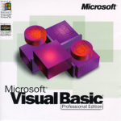

OVI - MODELADO DE DATOS
OVI - MODELADO DE DATOSEl término bases de datos fue escuchado por primera vez en un simposio celebrado en California en 1963. En una primera aproximación, se puede decir que una base de datos es un conjunto de información relacionada que se encuentra agrupada o estructurada.
Origenes
Las bases de datos se remontan a la Antigüedad donde ya existían bibliotecas y toda clase de registros. Además también se utilizaban para recoger información sobre las cosechas y censos. Sin embargo, su búsqueda era lenta y poco eficaz y no se contaba con la ayuda de máquinas que pudiesen reemplazar el trabajo manual.
Posteriormente, el uso de las bases de datos se desarrolló a partir de las necesidades de almacenar grandes cantidades de información o datos. Sobre todo, desde la aparición de las primeras computadoras, el concepto de bases de datos ha estado siempre ligado a la informática.
En 1884 Herman Hollerith creó la máquina automática de tarjetas perforadas, siendo nombrado así el primer ingeniero estadístico de la historia. En esta época, los censos se realizaban de forma manual. Ante esta situación, Hollerith comenzó a trabajar en el diseño de una maquina tabuladora o censadora, basada en tarjetas perforadas.
Posteriormente, en la década de los cincuenta se da origen a las cintas magnéticas, para automatizar la información y hacer respaldos. Esto sirvió para suplir las necesidades de información de las nuevas industrias. Y a través de este mecanismo se empezaron a automatizar información, con la desventaja de que solo se podía hacer de forma secuencial.
Década de 1960
Posteriormente en la época de los sesenta, las computadoras bajaron los precios para que las compañías privadas las pudiesen adquirir; dando paso a que se popularizara el uso de los discos, cosa que fue un adelanto muy efectivo en la época, debido a que a partir de este soporte se podía consultar la información directamente, sin tener que saber la ubicación exacta de los datos.
En esta misma época se dio inicio a las primeras generaciones de bases de datos de red y las bases de datos jerárquicas, ya que era posible guardar estructuras de datos en listas y árboles.
Otro de los principales logros de los años sesenta fue la alianza de IBM y American Airlines para desarrollar SABRE, un sistema operativo que manejaba las reservas de vuelos, transacciones e informaciones sobre los pasajeros de la compañía American Airlines.
Y, posteriormente, en esta misma década, se llevo a cabo el desarrollo del IDS desarrollado por Charles Bachman ( que formaba parte de la CODASYL) supuso la creación de un nuevo tipo de sistema de bases de datos conocido como modelo en red que permitió la creación de un standard en los sistemas de bases de datos gracias a la creación de nuevos lenguajes de sistemas de información.
CODASYL (Conference on Data Systems Languages) era un consorcio de industrias informáticas que tenían como objetivo la regularización de un lenguaje de programación estándar que pudiera ser utilizado en multitud de ordenadores.
Los miembros de este consorcio pertenecían a industrias e instituciones gubernamentales relacionadas con el proceso de datos, cuya principal meta era promover un análisis, diseño e implementación de los sistemas de datos más efectivos; y aunque trabajaron en varios lenguajes de programación como COBOL, nunca llegaron a establecer un estándar fijo, proceso que se llevo a cabo por ANSI.
Década de 1970
Por lo que respecta a la década de los setenta, Edgar Frank Codd, científico informático ingles conocido por sus aportaciones a la teoría de bases de datos relacionales, definió el modelo relacional a la par que publicó una serie de reglas para los sistemas de datos relacionales a través de su artículo “Un modelo relacional de datos para grandes bancos de datos compartidos”.

Este hecho dio paso al nacimiento de la segunda generación de los Sistemas Gestores de Bases de Datos. Como consecuencia de esto, durante la década de 1970, Lawrence J. Ellison, más conocido como Larry Ellison, a partir del trabajo de Edgar F. Codd sobre los sistemas de bases de datos relacionales, desarrolló el Relational Software System, o lo que es lo mismo, lo que actualmente se conoce como Oracle Corporation, desarrollando así un sistema de gestión de bases de datos relacional con el mismo nombre que dicha compañía.

Posteriormente en la época de los ochenta también se desarrollará el SQL (Structured Query Language) o lo que es lo mismo un lenguaje de consultas o lenguaje declarativo de acceso a bases de datos relacionales que permite efectuar consultas con el fin de recuperar información de interés de una base de datos y hacer cambios sobre la base de datos de forma sencilla; además de analiza grandes cantidades de información y permitir especificar diversos tipos de operaciones frente a la misma información, a diferencia de las bases de datos de los años ochenta que se diseñaron para aplicaciones de procesamiento de transacciones.
Pero cabe destacar que ORACLE es considerado como uno de los sistemas de bases de datos más completos que existen en el mundo, y aunque su dominio en el mercado de servidores empresariales ha sido casi total hasta hace relativamente poco, actualmente sufre la competencia del SQL Server de la compañía Microsoft y de la oferta de otros Sistemas Administradores de Bases de Datos Relacionales con licencia libre como es el caso de PostgreSQL, MySQL o Firebird que aparecerían posteriormente en la década de 1990.
Década de 1980
Por su parte, a principios de los años ochenta comenzó el auge de la comercialización de los sistemas relacionales, y SQL comenzó a ser el estándar de la industria, ya que las bases de datos relacionales con su sistema de tablas (compuesta por filas y columnas) pudieron competir con las bases jerárquicas y de red, como consecuencia de que su nivel de programación era sencillo y su nivel de programación era relativamente bajo.
Década años 1990
En la década de 1990 la investigación en bases de datos giró en torno a las bases de datos orientadas a objetos. Las cuales han tenido bastante éxito a la hora de gestionar datos complejos en los campos donde las bases de datos relacionales no han podido desarrollarse de forma eficiente. Así se desarrollaron herramientas como Excel y Access del paquete de Microsoft Office que marcan el inicio de las bases de datos orientadas a objetos.
Así se creó la tercera generación de sistemas gestores de bases de datos. Fue también en esta época cuando se empezó a modificar la primera publicación hecha por ANSI del lenguaje SQL y se empezó a agregar nuevas expresiones regulares, consultas recursivas, triggers y algunas características orientadas a objetos, que posteriormente en el siglo XXI volverá a sufrir modificaciones introduciendo características de XML, cambios en sus funciones, estandarización del objeto sequence y de las columnas autonuméricas. Y además, se creará la posibilidad de que SQL se pueda utilizar conjuntamente con XML, y se definirá las maneras de cómo importar y guardar datos XML en una base de datos SQL. Dando asi, la posibilidad de proporcionar facilidades que permiten a las aplicaciones integrar el uso de XQuery (lenguaje de consulta XML) para acceso concurrente a datos ordinarios SQL y documentos XML. Y posteriormente, se dará la posibilidad de usar la clausula order by.
Aunque el boom de la década de los noventa será es el nacimiento del World Wide Web a finales de la década, ya que a través de este se facilitará la consulta a bases de datos.

SIGLO XXI
En la actualidad, las tres grandes compañías que dominan el mercado de las bases de datos son IBM, Microsoft y Oracle. Por su parte, en el campo de internet, la compañía que genera gran cantidad de información es Google. Aunque existe una gran variedad de software que permiten crear y manejar bases de datos con gran facilidad, como por ejemplo LINQ, que es un proyecto de Microsoft que agrega consultas nativas semejantes a las de SQL a los lenguajes de la plataforma .NET. El objetivo de este proyecto es permitir que todo el código hecho en Visual Studio sean también orientados a objetos; ya que antes de LINQ la manipulación de datos externos tenía un concepto más estructurado que orientado a objetos; y es por eso que trata de facilitar y estandarizar el acceso a dichos objetos.
Cabe destacar que Visual Studio es un entorno de desarrollo integrado para sistemas operativos Windows que soporta varios lenguajes de programación tales como Visual C++, Visual#, Visual J#, ASP.NET y Visual Basic.NET, aunque se están desarrollando las extensiones necesarias para otros, cuyo objetivo es permitir crear aplicaciones, sitios y aplicaciones web, así como servicios web a cualquier entorno que soporte la plataforma .Net, creando así aplicaciones que intercomuniquen entre estaciones de trabajo, páginas web y dispositivos móviles.
